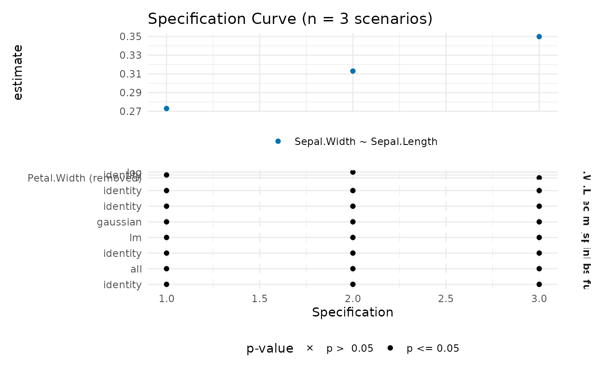

Stacks the coefficient table of each model (as returned by
summary(model)$coefficients) and adds the analytical choices defining
each specification.
Arguments
- x
A list of fitted
lmorglmmodels, apima.multiobject created bycreate_multi()withfit.specs(fittinglmorglmmodels), or apimaobject. Other model classes are not supported. For apimaobject the summary is the one computed bypima()(seis renamedscore.sebecause it is the standard error of the score, not of the estimate).- focal
Optional character vector of coefficient names to keep (exact match, e.g.
"log(x)"or"groupB").- focal.var
Optional character vector of variable names: keeps all the coefficients coming from these variables (e.g.
"x"keepsx,log(x)andsqrt(x);"group"keepsgroupBandgroupC). With bothfocalandfocal.var, the union is kept. With bothNULL(default), all the coefficients are returned, intercept included.
Value
A data.frame with one row per model x coefficient and columns
model, response, coefficient, term, variable, estimate, se,
wald.t, wald.p, pcor, followed by the specification columns and the
model formula (for pima objects, the columns of the pima() summary
replace the model summary). Two
attributes describe the specification columns:
spec_vars: all the specification columns.spec_predictors: the subset ofspec_varsthat are predictor choices (inclusion and transformation, with"excluded"when the predictor is not in the model). The remaining columns are other choices (e.g.,subset,fit_spec,family).
Details
For lists of models and pima.multi objects, estimate, se, wald.t
and wald.p are the columns of summary(model)$coefficients, unchanged.
The only derived column is pcor, the partial correlation computed from
the Wald statistic \(t\) (wald.t) and the residual degrees of freedom
\(\nu\) (df.residual(model)):
$$r = \frac{t}{\sqrt{t^2 + \nu}}.$$
It is scale-free, so it can be compared across
specifications using different transformations or link functions. For lm
models it is exactly the partial correlation; for glm models it is the
usual analogue based on the Wald z statistic. It inherits the model-based
standard error, so when the variance is misspecified (e.g., overdispersion
in a Poisson model) it can differ substantially from the pcor of a pima
object, which is based on the (standardized) score statistic. It is NA
when df.residual() is not available.
The columns term and variable link each coefficient to the term of the
formula and to the variable it comes from. They are derived from the
structure of the fitted model, not from the coefficient name: the term is
given by attr(model.matrix(model), "assign") and the variable by
all.vars() applied to the term (e.g. log(x) -> x). variable is NA
for the intercept and for terms involving more than one variable
(interactions), which can be selected only through focal.
See also
Other specification tables and plots:
spec_curve(),
spec_scatter(),
transf_p(),
volcano()
Examples
multi <- create_multi(
Sepal.Width ~ Sepal.Length + Petal.Width + Species,
data = iris,
focal = "Sepal.Length",
nfuns = "log",
fit.specs = list(lm = lm)
)
tab <- spec_table(multi, focal.var = "Sepal.Length")
head(tab)
#> model response coefficient term variable estimate
#> 1 model1 Sepal.Width Sepal.Length Sepal.Length Sepal.Length -0.0618848
#> 2 model2 Sepal.Width Sepal.Length Sepal.Length Sepal.Length 0.2892867
#> 3 model3 Sepal.Width Sepal.Length Sepal.Length Sepal.Length 0.3366911
#> 4 model4 Sepal.Width Sepal.Length Sepal.Length Sepal.Length 0.3498801
#> 5 model5 Sepal.Width Sepal.Length Sepal.Length Sepal.Length 0.2729748
#> 6 model6 Sepal.Width Sepal.Length Sepal.Length Sepal.Length 0.3130255
#> se wald.t wald.p pcor y.fun Sepal.Length
#> 1 0.04296699 -1.440287 1.518983e-01 -0.1175698 identity identity
#> 2 0.06604544 4.380117 2.241644e-05 0.3397733 identity identity
#> 3 0.05489989 6.132820 7.587290e-09 0.4513681 identity identity
#> 4 0.04630128 7.556598 4.187340e-12 0.5302358 identity identity
#> 5 0.04671554 5.843341 3.240371e-08 0.4365754 identity identity
#> 6 0.04698700 6.661961 5.230835e-10 0.4840977 identity identity
#> Petal.Width Species subset fit_spec family link
#> 1 excluded excluded all lm gaussian identity
#> 2 identity excluded all lm gaussian identity
#> 3 log excluded all lm gaussian identity
#> 4 excluded identity all lm gaussian identity
#> 5 identity identity all lm gaussian identity
#> 6 log identity all lm gaussian identity
#> formula
#> 1 Sepal.Width ~ Sepal.Length
#> 2 Sepal.Width ~ Sepal.Length + Petal.Width
#> 3 Sepal.Width ~ Sepal.Length + log(Petal.Width)
#> 4 Sepal.Width ~ Sepal.Length + Species
#> 5 Sepal.Width ~ Sepal.Length + Petal.Width + Species
#> 6 Sepal.Width ~ Sepal.Length + log(Petal.Width) + Species
attr(tab, "spec_vars")
#> [1] "y.fun" "Sepal.Length" "Petal.Width" "Species" "subset"
#> [6] "fit_spec" "family" "link"
# filter the table and plot it
spec_curve(tab[tab$Species != "excluded", ])
